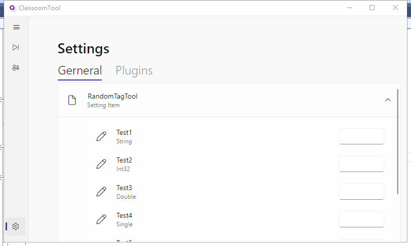

应用
我们的一些小型作品


FlybirdGames下设的mc相关和小项目的代理组织
我们从何而来，和FlybirdGames这一上级的不同
作为FlybirdGames的子组织，ProtonGames的性质更偏向于组织而非工作室。
虽然并没有太多成员，并且以学生群体为主，但在为数不多的时间里，我们仍然十分活跃。
我们秉承着开放与包容的态度，欢迎每一个愿意交流技术和程序的同志。
我们致力于为玩家制造良好和自由的游戏环境
在这里，你将与敌对生物————甚至玩家进行激烈的战争，也可以合理和气，互相成就，在枪械之中，你战无不胜（？？？？
“前人栽树，后人乘凉”